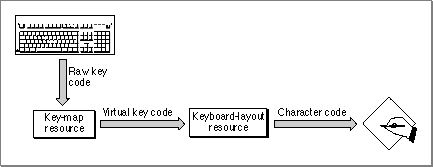
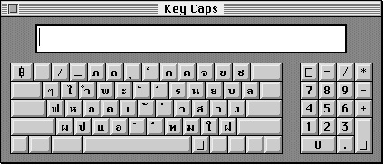
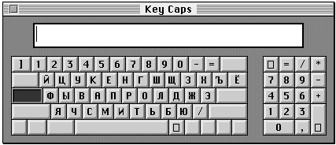

Keyboards and Input Methods
By means of keyboard input, the user can create text that your application stores as character codes and displays as glyphs. At first glance this may seem a difficult task: your application should be able to handle input from at least 13 different hardware types of Apple keyboards, as listed in the appendix "Keyboard Resources" in this book. Furthermore, it must be able to derive the proper character codes for any writing system from each of the keyboards and recognize the states of the modifier keys (Shift, Caps Lock, Command, Option, and Control).The system software and the keyboard resources make this relatively easy for
you. The Event Manager uses the keyboard resources to convert keypresses into the correct character codes for the current writing system, for whatever keyboard is used. Your application receives the codes directly and needn't keep track of the specific keyboard in use.Figure 1-7 is a simplified view of key translation, the process by which character codes are generated. Each keyboard has a particular physical arrangement of keys, and each keypress generates a value called a raw key code, which indicates which key was pressed. The keyboard driver that handles the keypress uses the key-map resource to map these raw key codes to keyboard-independent virtual key codes. It then uses the Event Manager and the keyboard-layout resource to convert a virtual key code into a character code, and passes it to your application in the event record generated by the keypress. See "Keyboards and Key Translation" beginning on page 1-87 for a more complete description of key translation; see the Event Manager chapter in Inside Macintosh: Macintosh Toolbox Essentials for a description of events and event records.
Figure 1-7 Key translation (simplified)

Keyboard layout can be considered the overall relationship between the physical arrangement of keys on a keyboard and the glyphs produced when those keys are pressed. It is what the Key Caps desk accessory shows; see Figure 1-8.Figure 1-8 Key Caps display of Thai keyboard layout (no modifier keys pressed)

Changing the physical keyboard, changing the keyboard-layout resource, pressing modifier keys, and changing the font can all change the relationship between keypresses and glyphs. Figure 1-9 is a Key Caps display for the same physical keyboard as that
in Figure 1-8, but the writing system has been changed from Thai to Cyrillic. For
the purposes of this book, however, the keyboard-layout resource is the critical
item in determining keyboard layout; changing the keyboard layout means changing
the keyboard-layout resource. Because keyboard layouts are independent of the
physical keyboard attached to the computer, your application has the flexibility
of changing text input from one writing system to another by simply using a different keyboard-layout resource.Figure 1-9 Key Caps display of Cyrillic keyboard layout (Caps Lock key pressed)

For languages with large character sets, it is impractical to manufacture keyboards with keys for every possible character. In such a case, it is usually the job of an input method, working in conjunction with a keyboard, to handle text input. An input method is a software module, often independent of the application it serves, that converts character codes that can be entered from the keyboard into character codes that cannot. Japanese and Chinese input methods commonly display a small window, into which the user types a sequence of phonetic characters; the input method converts them into one or more ideographic character codes and sends them to the application. A more sophisticated input method is inline input, in which entry and conversion of text occur directly in the window of the text document being edited. See "Input Methods" beginning on page 1-91 and the chapter "Text Services Manager" in this book for more information on input methods and inline input.In most cases, your application does not need to do anything special related to keyboard input. You can use the character codes returned by the Event Manager function
WaitNextEvent--whether generated directly from keypresses or through an input method--and handle the text appropriately for the language being used for input. Remember, however, that keyboard input is independent of text display; it is your responsibility to keep the two synchronized when necessary. If the user switches language for text input, you must switch the language for text display accordingly. The Font Manager and Script Manager provide routines that help you with that; see "Font and Keyboard Synchronization" beginning on page 1-90, and further discussion in the chapter "Script Manager" in this book.